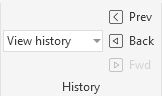
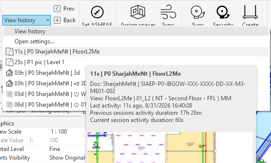
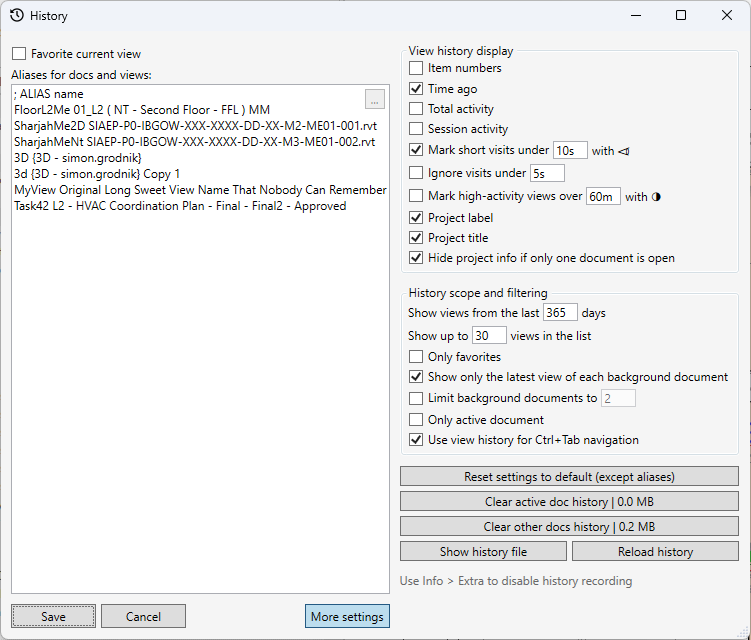
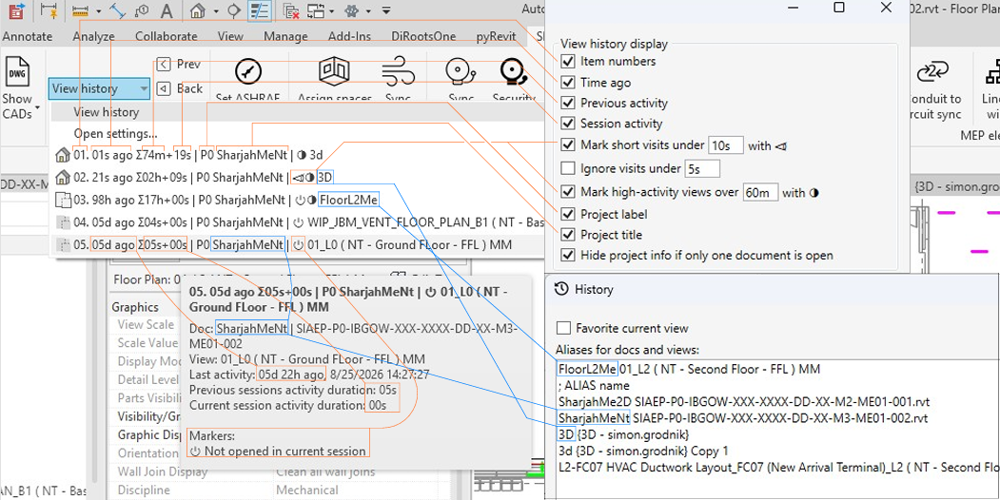

View History
Table of contents
The View History tool stores recently visited Revit views and lets you return to them quickly. The history is preserved between Revit sessions and displayed in the History panel on the SNR tab.
Temporary location: This page currently uses the legacy History entry in the documentation structure. The feature described here is the new View History, and this page should be moved to its own documentation entry.

Why View History Is Useful
It is easy to lose your working context in Revit: a project may have dozens of plans, sections, 3D views, and sheets open, and you may need to switch between them constantly. After such a switch, the required view is not always easy to find among the tabs or in the Project Browser.
View History reduces this problem:
- shows which views were used recently, regardless of the order in which they were originally opened;
- lets you return to a view in just a couple of clicks, without searching through the project structure;
- helps you quickly switch between the current and previous view with the Prev button or
Ctrl+Tab; - preserves context between Revit sessions: after reopening a project, you can select the required view from the history without searching in the Project Browser;
- helps distinguish views from different open documents by labels and names, without switching between windows or trying to remember where the required view was;
- lets you replace long and hard-to-read project and view names with short, clear names using aliases;
- lets you mark important views as favorites so they are not lost among less important transitions.
Enabling History Recording
History recording is disabled by default. Enable it in Info > Extra > ✅ View history recording. After it is enabled, the History panel is added to the ribbon and starts building a list of recently visited views.
Working with the View List
Open View history to see recently visited views. The content and order of the displayed information can be configured in Settings -> View history display.

Select an entry to activate the corresponding view. If a modifier key is held while selecting it (any of Ctrl, Shift, Alt, or Win), the tool closes other Revit views.
The list may contain empty slots. This is caused by limitations of Revit’s Ribbon interface and does not indicate an error in the history.
View Navigation
The History panel provides these commands:
- Prev: switches to the previous view, ping-ponging between two views;
- Back: moves backward through the current session’s navigation history;
- Forward: moves forward after navigating back.
When Use view history for Ctrl+Tab navigation is enabled (by default), these keyboard shortcuts are available:
Ctrl+Tab: previous view;Ctrl+Shift+Tab: move forward;- press
Tabagain while holdingCtrl: move backward through the history.
Display Settings
To open the settings, select Open settings… from the history drop-down list.
The View history display section lets you configure:
- whether slot numbers are shown;
- whether the last visit time is shown;
- whether total activity or activity from previous sessions is shown;
- whether activity from the current session is shown;
- whether short visits are marked;
- whether visits shorter than a specified duration are excluded;
- whether highly active views are marked;
- whether the project label is shown;
- whether the project name is shown;
- whether project information is hidden when only one document is open.
The project label is calculated automatically and shows how recently the project was last visited. The active document receives index 0, while other open documents are numbered by the time of their last visit: 1, 2, 3, and so on. The letter P denotes a project, and F denotes a family. For example, P0 is the active project, P1 is the previous project, and F2 is a family visited before P1.
The duration threshold is specified as a string with a time unit, such as 5s, 30m, or 2h.

A view name does not always show how important it is to the current work: names may be long, similar to one another, or say nothing about how often a view is used. History therefore shows additional statistics: the last visit time, the total time spent on the view, and activity in the current session. This makes it easier to distinguish a working view that is revisited regularly from one that was opened accidentally or only briefly.
By default, the view list contains a minimum amount of information so it is easier to understand when you first start working with it. Experienced users can enable additional display options as needed and depending on their work context.

History Scope and Filtering
The History scope and filtering section provides these options:
- the period for which visited views are shown;
- the maximum number of entries in the list;
- showing favorites only;
- showing only the last view of each background document;
- limiting the number of background documents;
- showing views from the active document only;
- using history for
Ctrl+Tabnavigation (this overrides Revit’s native behavior, where the switching order is determined by the order in which views were opened rather than visited).
Filters affect only the displayed list. They do not delete entries from the history file.
Favorite Views
To mark the current view as a favorite, enable Favorite current view in the settings window. Favorite views are not displaced by ordinary views when the number of entries is limited and occupy available list slots before them. A favorite can also remain in the list when the Only favorites filter is enabled.
Document and View Aliases
In Aliases for docs and views, you can specify custom names for documents and views. One line defines one alias in this format:
ALIAS display_name
The alias is the first word on the line. The first space separates the alias from the full document or view name, so an alias cannot contain spaces. Spaces are allowed in the document or view name. For example:
MyView Original Long View Name
Here, MyView is the alias and Original Long View Name is the view name. If you write My View Original Long View Name, the alias is recognized as My and the view name as View Original Long View Name.
Lines beginning with ; are treated as comments and are not processed.
The ... menu in the corner of the field lets you:
- add an alias for the active document;
- add an alias for the active view;
- sort lines by alias name;
- sort lines by document or view name.
Aliases are preserved when the other settings are reset.
Managing History
The settings window provides these commands:
- Reset settings to default (except aliases): reset settings while preserving aliases;
- Clear active doc history: delete the history of the active document;
- Clear other docs history: delete the history of all documents except the active one, including closed documents whose entries are stored in the log;
- Show history file: open the folder containing the history file;
- Reload history: reread the history from disk.
History is stored in:
%APPDATA%\Sener\BimTools\ViewHistory.json
When the size limit is reached, the old file is automatically moved to an archive.
Click Save to apply changes. Cancel closes the window without applying changes.
Current Limitations
- An unsaved project (or a family opened from a project rather than from disk and not saved to disk during the current session) can be used for navigation only while it is the active document. Switching to an unsaved document from another document is not possible due to API limitations.
- The
Ctrl+Tabinterception works only when both history recording and Use view history for Ctrl+Tab navigation are enabled.
Performance and Stability
History tracks view switches and performs additional processing when views change. Under normal conditions this should not be noticeable, but the feature may affect switching speed or Revit stability if errors occur.
During the first few months, monitor Revit after enabling history recording. Report performance problems, delays, or instability to the developer, including the Revit version and the sequence of actions that led to the problem.
History recording is disabled by default. For the near future, the feature will be distributed in the disabled state so users can enable it deliberately and check Revit’s behavior in their own working environment.